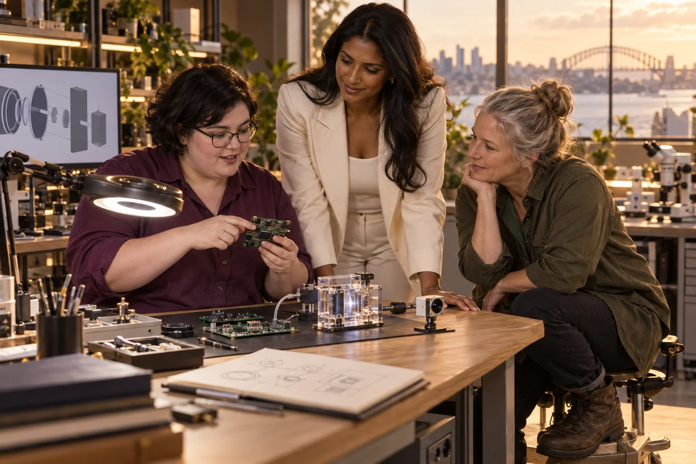

Choose one simple flow question with a qualified technical adviser.

500 Queens / Micro Fluidics
Micro Fluidics
Make tiny fluid systems understandable through a visible, controlled flow experiment.
Follow the connections. Choose your direction.
The need worth working on.
A small fluid channel can be difficult to inspect, clean and reproduce. Before connecting microfluidics to a medical or industrial promise, a team needs to understand how the device is made, how fluids move through it and which measurements are trustworthy.
What the enterprise could offer.
Develop a microfluidic design and teaching service that starts with harmless demonstration fluids. Choose a task such as comparing flow paths or observing mixing, and make the cartridge, connections and measurement process easy to inspect. Any diagnostic application would require a separate evidence programme.
People to build with
- Teaching laboratories explaining fluid behaviour
- Researchers prototyping a non-clinical flow experiment
- Makers evaluating cartridge design and repeatability
A transparent flow cartridge
Make or obtain comparable transparent cartridges with documented dimensions.
Run appropriate harmless demonstration fluids under controlled conditions.
Record leaks, blockage, cleaning effort and variation between cartridges.
Ask a new operator to repeat the experiment using the written instructions.
The first result
A demonstration cartridge, repeatability record and practical operator guide.
What needs to be demonstrated.
Engineering development
The starting evidence
Small-channel fluid experiments can be developed as laboratory or educational tools without claiming diagnostic capability.
The open question
The source specifies no channel design, fluid, measurement method or intended clinical use.
The next measurement
Compare the chosen flow measurement across independently prepared cartridges and operators.
Build the means to deliver.
Useful capabilities and resources
- A microfluidics or fluid-systems specialist
- Suitable fabrication and observation tools
- A controlled non-clinical workspace and appropriate demonstration fluids
A possible business model
Teaching kits, custom cartridge design or research support could be tested before pursuing a regulated product.
A leadership decision to practise
Choose one use case and make its evidence boundary explicit. Give operators influence over cleaning, connection and replacement design.
People, consequences and decisions.
- Small fabrication differences can change flow behaviour.
- A laboratory demonstration may not survive transport or ordinary handling.
- A visually impressive cartridge can be mistaken for a validated diagnostic device.
If equality were being designed now...
- Can people with different hand strength and vision use the connectors?
- Could a regional teaching group replace a damaged part locally?
Begin with women's own experiences across bodies, ages, cultures and places. Invite disagreement and choose a practical change together.
Create a women-led design brief →Build your learning council.


Civilisation PillarRiver Queen
Anglo-Torres Strait Islander
Follow the water, and the people who depend on it.
Build alongside these ideas.
Extreme metamaterialsPolymers
Design useful polymers around a real product's life, repair and recovery needs.
Practical pilot
Micro-architecturesSensors and Switches
Build simple sensing tools that make a local service easier to understand and maintain.
Practical pilot
Micro-architecturesMolecular Machines
Explore molecular-scale motion without confusing a research mechanism with a finished medical product.
Research frontier
Humanities and funMicro Biome Mastery
Help people understand microbiome research without promising mastery of a complex living system.
Research frontier
Follow existing public concept work.
Connected public conceptExtreme Matter Atlas
Explore elements, crystals, metamaterials and frontier ideas through quantities, mechanisms and the nearest working technology.
Connected public conceptStraddie Maker-Space Lab
A proposed Dunwich maker-space connects useful production, repair, shared tools and practical learning.
From the original suggestion to a working brief.
Developed from original enterprise 84 in the 500 Queens VC NEW Long presentation (slide 17) and the planning document (page 8). This expanded brief is a proposed development path, not evidence of an operating venture or a confirmed partner.
Original title: Micro Fluidics. The pilot, business model and learning connections on this page are proposed developments of that original idea.